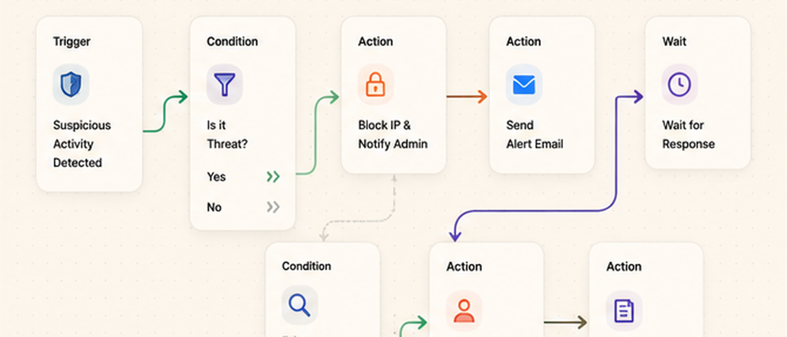
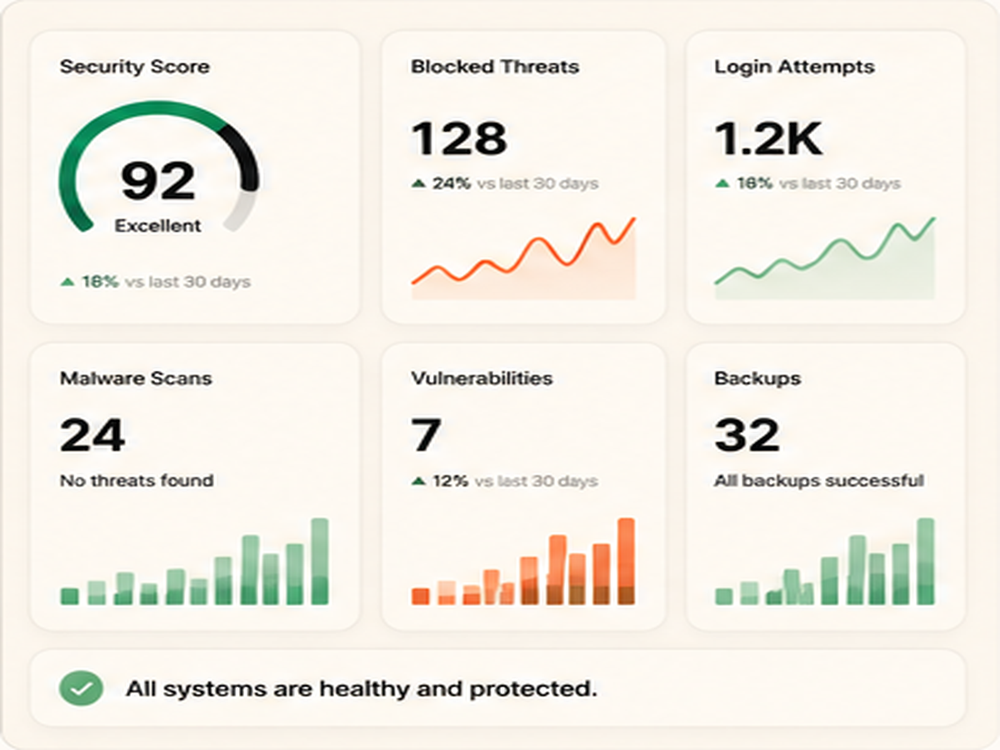
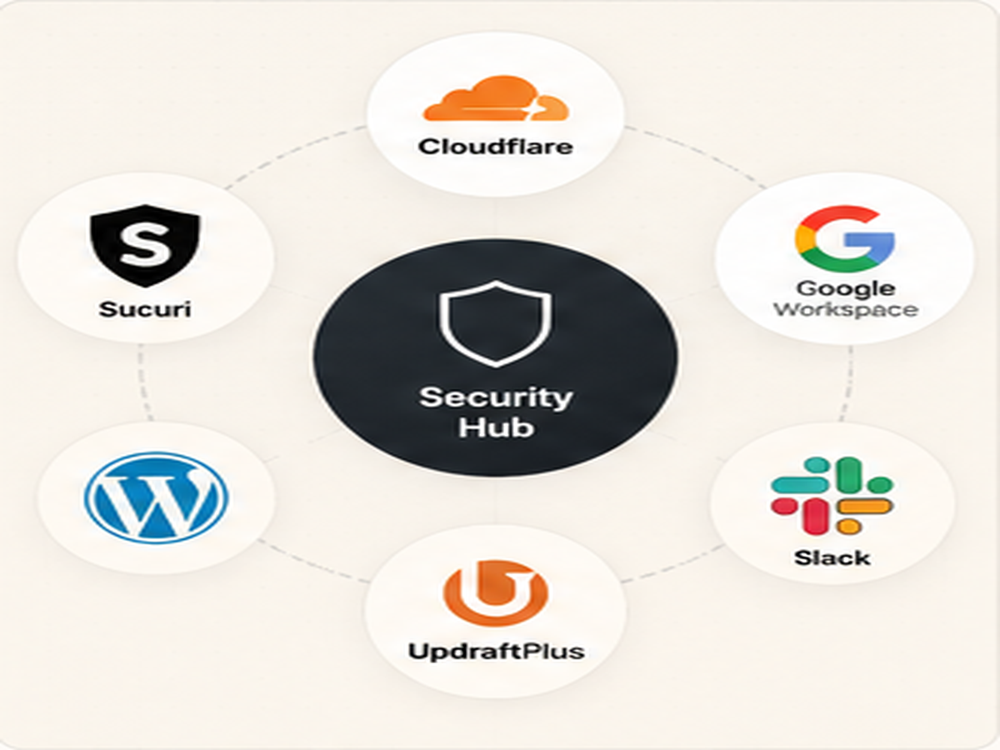
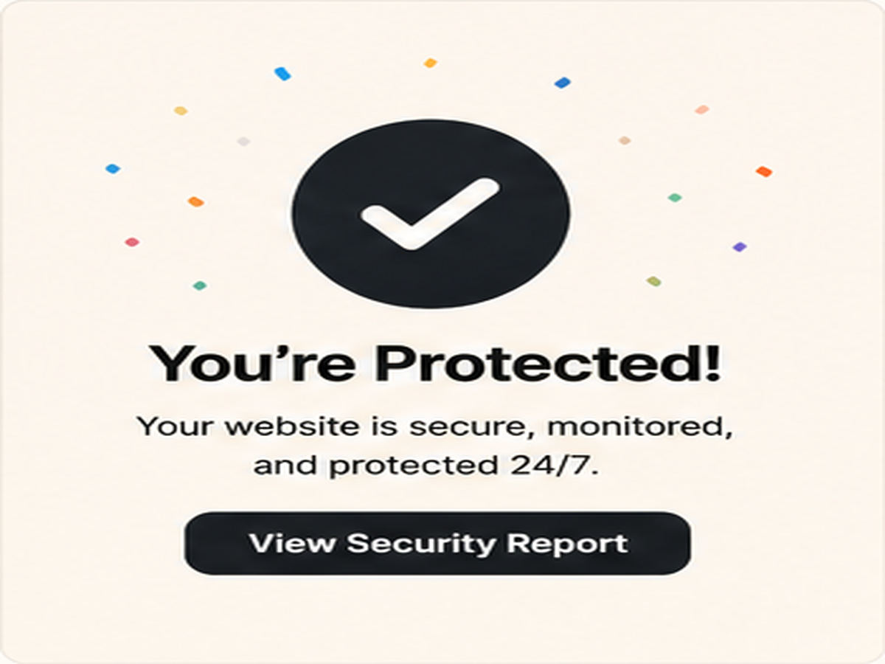

Security is not only fixing problems after they happen.
Good security starts before anything goes wrong. The first goal is to reduce weak points: bad passwords, wrong permissions, outdated software, exposed admin pages, and missing backups. A beginner-friendly place to understand common web risks is OWASP.
Many websites do not fail because of one advanced attack. They fail because basic things were ignored. Simple checks can prevent a lot of damage before the site becomes a target.

Website security dashboard preview
Secure login and access controlStrong logins protect the front door.
Weak passwords and shared accounts are common problems. Every important account should use a strong password, two-factor authentication, and separate access for each person.
Services like Have I Been Pwned can help people understand whether an email has appeared in known data breaches. This does not replace security, but it helps show why strong login habits matter.
Permissions should be clean and limited.
Not every person needs full admin access. A safer setup gives each person only the access they need. This reduces risk if an account is hacked or if someone makes a mistake.
Admin accounts should be limited, old accounts should be removed, and sensitive settings should not be shared. Clean access control is one of the simplest ways to protect a website or business system.
Use two-factor login
Add 2FA to admin accounts, hosting accounts, email accounts, and important business tools.
Remove unused accounts
Old user accounts create extra risk. Remove accounts that are no longer needed.
Limit admin access
Give full access only to people who truly need it. Everyone else should have limited roles.
DNS, backups, and monitoring matter.
Website security is not only inside the website. DNS settings, SSL, hosting, email records, backups, and uptime monitoring all affect trust and safety.
Platforms like Cloudflare are often used for DNS, SSL, firewall rules, caching, and basic protection. The setup should be simple, clean, and documented.

DNS and SSL security checks
Security result screenThe final idea.
Before adding advanced tools, ask: are the basics already clean? Strong logins, correct permissions, safe DNS, backups, updates, and monitoring should come first.
Security feels complicated when everything is ignored until there is a problem. It becomes easier when small checks are handled before the attack happens.